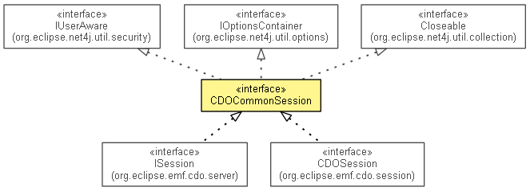

org.eclipse.emf.cdo.common
Interface CDOCommonSession
- All Superinterfaces:
- Closeable, IAdaptable, IOptionsContainer, IUserAware
- All Known Subinterfaces:
- CDONet4jSession, CDOSession, CDOSession, CDOSession, InternalCDOSession, InternalSession, ISession
- public interface CDOCommonSession
- extends IAdaptable, IUserAware, IOptionsContainer, Closeable

Abstracts the information about CDO sessions that is common to both client and server side.
- Since:
- 2.0
- No Implement
- This interface is not intended to be implemented by clients.
- No Extend
- This interface is not intended to be extended by clients.
|
Nested Class Summary |
static interface |
CDOCommonSession.Options
Encapsulates the configuration options of CDO sessions that are common to both client and server side. |
getSessionID
int getSessionID()
getViews
CDOCommonView[] getViews()
getView
CDOCommonView getView(int viewID)
options
CDOCommonSession.Options options()
- Returns the
options of this session.
- Specified by:
options in interface IOptionsContainer
Copyright (c) 2011, 2012 Eike Stepper (Berlin, Germany) and others.